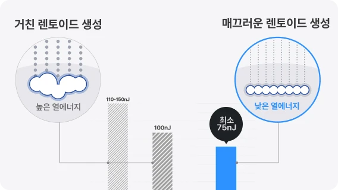
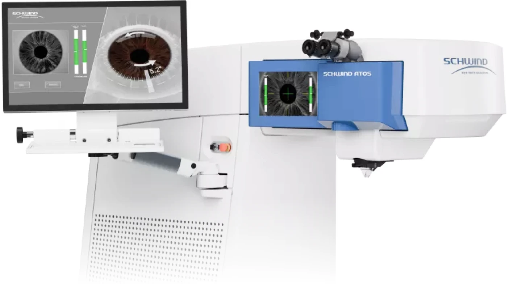
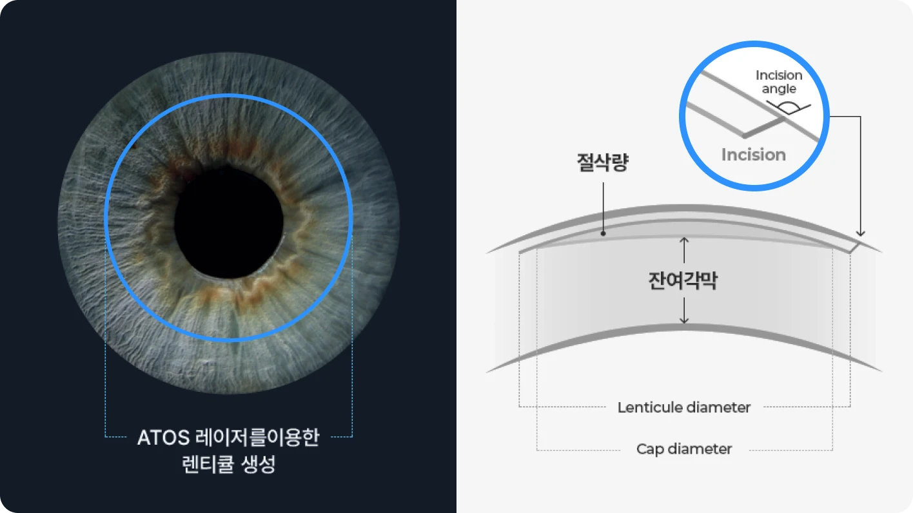

최소 에너지, 각막 혼탁 해결
일반 라섹에 비해 수술에 사용되는 총 레이저 에너지가 기존 라섹 대비 100분의 1에 해당하는 에너지만을 사용합니다. 이러한 낮은 에너지 사용은 수술 과정에서 각막에 가해지는 자극을 크게 줄이며, 각막 혼탁 발생이 거의 발생하지 않습니다.
초정밀 펨토초레이저로 각막 상피제거부터 실질부 시력교정까지 한번에. 기존 라섹 대비 1%의 총 에너지만을 사용해 각막 혼탁을 해결, 회복과 시력의 질을 향상합니다.
스마일라섹은 최소 에너지를 이용해 각막 혼탁 우려 해결하고 각막 상피 제거부터
실질부 시력 교정까지 초정밀 펨토초레이저로 단 한번에 수술합니다.
일반 라섹 대비 약 1% 수준의 에너지를 사용해 수술 중 각막
자극을 줄이고 각막 혼탁 우려를 낮추는 데 도움을 줍니다.

도수와 관계없이 약 10초 내외의 일정한 레이저 조사로
정밀하고 예측 가능한 수술을 구현합니다.

각막 상피 제거와 시력 교정을 하나의 흐름으로 설계해
불필요한 반복 절삭 없이 수술을 진행합니다.
일반 라섹에 비해 수술에 사용되는 총 레이저 에너지가 기존 라섹 대비 100분의 1에 해당하는 에너지만을 사용합니다. 이러한 낮은 에너지 사용은 수술 과정에서 각막에 가해지는 자극을 크게 줄이며, 각막 혼탁 발생이 거의 발생하지 않습니다.

일반 라섹은 엑시머 레이저로 각막을 여러 번 반복적으로 절삭하므로, 예를 들어 근시 -5디옵터를 교정할 경우, 레이저 조사 시간이 약 40~50초가 소요됩니다. 반면 스마일라섹은 각막을 반복적으로 깎지 않고, 단 한 단면만을 형성하므로 그 결과, 도수의 높고 낮음과 관계없이 레이저 조사 시간은 단안 기준 약 10초 내외로 일정합니다.

사람마다 다른 각막 상피 두께, 각막 중심부와 주변부 상피 두께 차이까지 고려해 개인별 수술합니다. 레이저 에너지를 미세 단위로 정밀하게 조절하여 각막 절삭면을 부드럽게 만들기 때문에 수술 후 회복이 빠르고 시력의 질적 향상에 도움을 줍니다.

스마일라섹 수술 전, 가장 많이 묻는 질문
스마일라섹은 일반 라섹과 무엇이 다른가요?
수술 방식은 정밀검사 결과를 바탕으로 결정됩니다. 근시·난시 정도, 각막 두께와 형태, 고위수차, 야간 빛번짐 우려, 회복 목표 등을 종합해 기본 투데이라섹, 커스텀아이즈 투데이라섹, 커스텀아이즈 Plus 중 적합한 방식을 안내합니다.
스마일라섹은 각막 혼탁을 줄이는 데 도움이 되나요?
수술 방식은 정밀검사 결과를 바탕으로 결정됩니다. 근시·난시 정도, 각막 두께와 형태, 고위수차, 야간 빛번짐 우려, 회복 목표 등을 종합해 기본 투데이라섹, 커스텀아이즈 투데이라섹, 커스텀아이즈 Plus 중 적합한 방식을 안내합니다.
수술 시간과 회복은 어느 정도인가요?
수술 방식은 정밀검사 결과를 바탕으로 결정됩니다. 근시·난시 정도, 각막 두께와 형태, 고위수차, 야간 빛번짐 우려, 회복 목표 등을 종합해 기본 투데이라섹, 커스텀아이즈 투데이라섹, 커스텀아이즈 Plus 중 적합한 방식을 안내합니다.